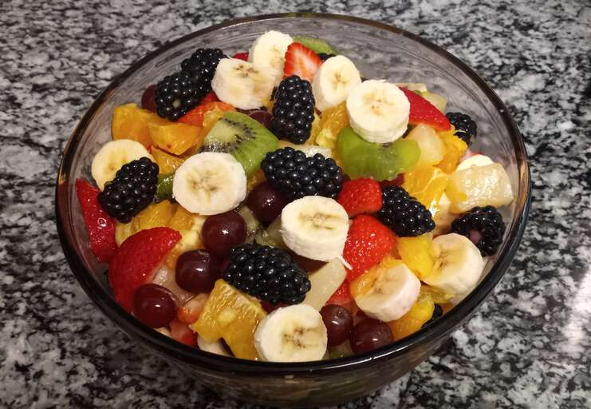

FRUIT SALAD

This fruit salad is perfect for a backyard bbq or any occasion. There are never leftovers! This is one of my favorite fruit salad recipes, as I think the citrusy sauce really makes it. This salad is tastier the longer you can let it soak in its juices. I prefer 3 to 4 hours in the refrigerator before I serve it.
INGREDIENTS
- For the sauce: fresh orange and lemon juices, brown sugar, grated orange and lemon zests, and vanilla extract
- The fruit you'll need: pineapple, strawberries, kiwis, bananas, oranges, grapes, and blueberries
- Note: Of course, this is a super customizable recipe — you can omit certain fruits or add other fruits to suit your taste and what you have on hand! 3
STEPS
- Make the sauce on the stove and let it cool.
- Arrange the fruits in a container, then pour the sauce over them.
- Cover and refrigerate to allow the flavors to meld.
Can You Make Fruit Salad Ahead of Time?
Yes! This fruit salad is actually a great make-ahead recipe, as the flavors need time to meld in the fridge before serving. Make the dish the day before, then store it in an airtight container in the refrigerator until you're ready to serve it.